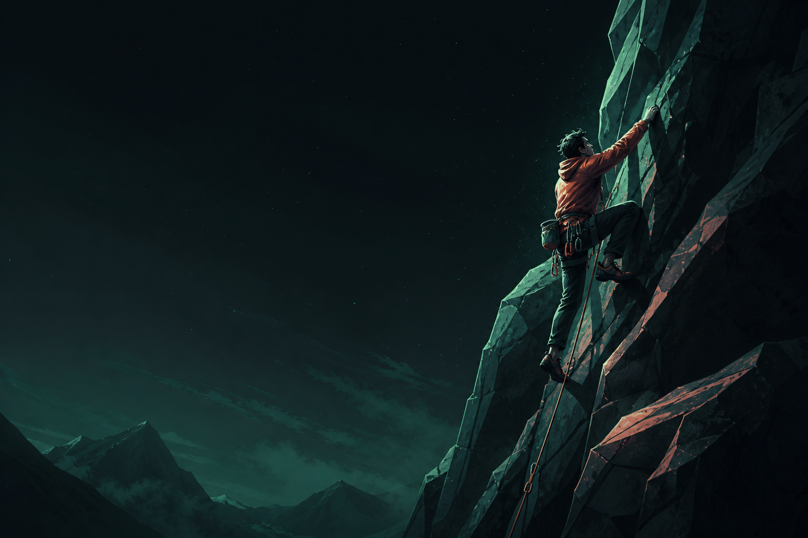

[사람 확인 필요]
프로젝트 설명은 확인된 자료를 바탕으로 작성합니다.

01 / ABOUT
[사람 확인 필요] CV가 제공되지 않아 자기소개와 전문 분야는 확인 후 작성합니다.
02 / SELECTED WORK
프로젝트 설명은 확인된 자료를 바탕으로 작성합니다.
프로젝트 설명은 확인된 자료를 바탕으로 작성합니다.
프로젝트 설명은 확인된 자료를 바탕으로 작성합니다.
03 / EXPERIENCE
[사람 확인 필요]
경력 정보는 확인된 자료 수신 후 업데이트합니다.
04 / RESEARCH
[사람 확인 필요] 연구·관심 분야와 관련 링크는 사람 확인 후 추가합니다.
05 / PLAYGROUND
무적 버튼: 사용 가능
방향키 또는 WASD로 이동합니다. 반대 방향 전환은 막혀 있습니다.
적 3마리 · 체력 3칸 · 충돌 3회 시 게임 오버
06 / CONTACT
[사람 확인 필요] 공개할 연락처와 외부 프로필 링크는 사람 확인 후 추가합니다.